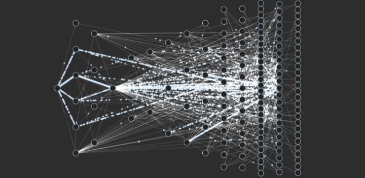
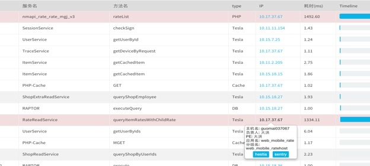
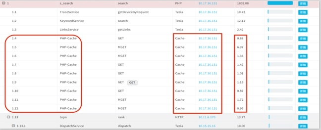
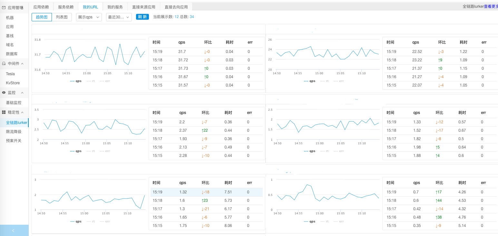
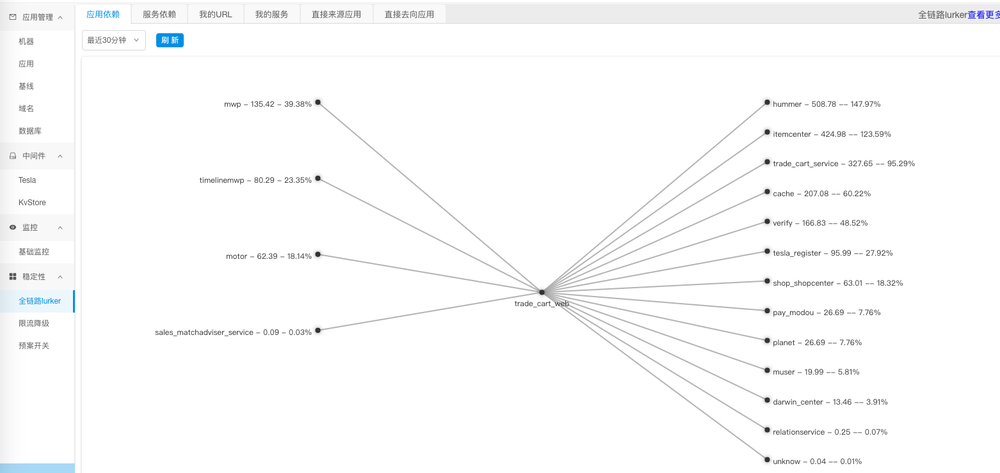
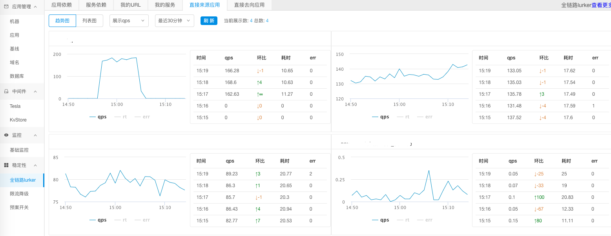

- 00 开篇词 带给你不一样的运维思考.md.html
- 01 为什么Netflix没有运维岗位？.md.html
- 02 微服务架构时代，运维体系建设为什么要以应用为核心？.md.html
- 03 标准化体系建设（上）：如何建立应用标准化体系和模型？.md.html
- 04 标准化体系建设（下）：如何建立基础架构标准化及服务化体系？.md.html
- 05 如何从生命周期的视角看待应用运维体系建设？.md.html
- 06 聊聊CMDB的前世今生.md.html
- 07 有了CMDB，为什么还需要应用配置管理？.md.html
- 08 如何在CMDB中落地应用的概念？.md.html
- 09 如何打造运维组织架构？.md.html
- 10 谷歌SRE运维模式解读.md.html
- 11 从谷歌CRE谈起，运维如何培养服务意识？.md.html
- 12 持续交付知易行难，想做成这事你要理解这几个关键点.md.html
- 13 持续交付的第一关键点：配置管理.md.html
- 14 如何做好持续交付中的多环境配置管理？.md.html
- 15 开发和测试争抢环境？是时候进行多环境建设了.md.html
- 16 线上环境建设，要扛得住真刀真枪的考验.md.html
- 17 人多力量大vs.两个披萨原则，聊聊持续交付中的流水线模式.md.html
- 18 持续交付流水线软件构建难吗？有哪些关键问题？.md.html
- 19 持续交付中流水线构建完成后就大功告成了吗？别忘了质量保障.md.html
- 20 做持续交付概念重要还是场景重要？看笨办法如何找到最佳方案.md.html
- 21 极端业务场景下，我们应该如何做好稳定性保障？.md.html
- 22 稳定性实践：容量规划之业务场景分析.md.html
- 23 稳定性实践：容量规划之压测系统建设.md.html
- 24 稳定性实践：限流降级.md.html
- 25 稳定性实践：开关和预案.md.html
- 26 稳定性实践：全链路跟踪系统，技术运营能力的体现.md.html
- 27 故障管理：谈谈我对故障的理解.md.html
- 28 故障管理：故障定级和定责.md.html
- 29 故障管理：鼓励做事，而不是处罚错误.md.html
- 30 故障管理：故障应急和故障复盘.md.html
- 31 唇亡齿寒，运维与安全.md.html
- 32 为什么蘑菇街会选择上云？是被动选择还是主动出击？.md.html
- 33 为什么混合云是未来云计算的主流形态？.md.html
- 35 以绝对优势立足：从CDN和云存储来聊聊云生态的崛起.md.html
- 36 量体裁衣方得最优解：聊聊页面静态化架构和二级CDN建设.md.html
- 37 云计算时代，我们所说的弹性伸缩，弹的到底是什么？.md.html
- 38 我是如何走上运维岗位的？.md.html
- 39 云计算和AI时代，运维应该如何做好转型？.md.html
- 40 运维需要懂产品和运营吗？.md.html
- 41 冷静下来想想，员工离职这事真能防得住吗？.md.html
- 42 树立个人品牌意识：从背景调查谈谈职业口碑的重要性.md.html
- 划重点：赵成的运维体系管理课精华（一）.md.html
- 划重点：赵成的运维体系管理课精华（三）.md.html
- 划重点：赵成的运维体系管理课精华（二）.md.html
- 新书 《进化：运维技术变革与实践探索》.md.html
- 特别放送 我的2019：收获，静静等待.md.html
- 结束语 学习的过程，多些耐心和脚踏实地.md.html
- 捐赠
26 稳定性实践：全链路跟踪系统，技术运营能力的体现
今天我们来分享全链路跟踪系统建设方面的内容。我们知道，随着微服务和分布式架构的引入，各类应用和基础组件形成了网状的分布式调用关系，这种复杂的调用关系就大大增加了问题定位、瓶颈分析、容量评估以及限流降级等稳定性保障工作的难度，如我们常见的调用网状关系。

图片出自：https://www.linkedin.com/pulse/100-million-members-125-hours-watched-per-day-hundreds-probst/
正是这样的背景，催生了分布式链路跟踪，也叫全链路跟踪的解决方案。
关于这一块的技术解决方案，在Google的Dapper论文发表之后，近些年业界已经有非常多且非常成熟的实践经验和开源产品。
比如阿里的鹰眼系统，就是全链路跟踪系统在国内的最佳实践；再比如美团点评的CAT分布式监控系统，也是从产品实践中逐步开源出来，在业界已经得到了非常广泛的应用；还有一些独立的开源产品，比如国内分布式监控技术专家吴晟创建的Skywalking项目，也是非常优秀的产品，而且也有比较广泛的应用。
除此之外，还有大量优秀的商业产品，这类产品通常叫APM，应用性能管理系统，比如国内的听云、博瑞、OneAPM等等，他们在产品化方面做的会更完善，在很多场景下可以非常方便地落地应用。
介绍上述这些产品，主要还是想说明，当前在分布式或全链路跟踪监控这个领域，无论是在技术还是产品层面都已经相对成熟，我们完全可以通过对这些产品的调研来选择适合自己的解决方案。
蘑菇街在这块也是自研了一套体系，但是技术方案和思路上跟上述这些开源或商业产品都很相似，所以技术层面我就不再做详细赘述。
如果想深入了解相关内容，一方面可以在网上找到非常多的资料，甚至是去阅读源码；另一方面还是推荐极客时间上陈皓老师的《左耳听风》专栏和杨波老师的《微服务架构核心20讲》，两位都是骨灰级的微服务和分布式架构专家，他们在技术层面的分享会更有深度和针对性。
全链路跟踪系统在技术运营层面的应用
接下来，主要分享我们利用全链路跟踪系统在技术运营层面做的一些事情，这里提到的运营，就是应用在线上运行时，我们根据应用运行数据所做的运行维护工作，这里我们会更加强调数据的作用。
同时，这里的一个核心技术点就是 TraceID，当请求从接入层进来时，这个TraceID就要被创建出来；或者是通过Nginx插件方式创建放到http的header里面；或者是通过RPC服务化框架生成。然后在后续的请求中，这个字段会通过框架自动传递到下一个调用方，而不需要业务考虑如何处理这个核心字段。
有了这个TraceID，我们就可以将一个完整的请求链路给串联起来了，这也是后面场景化应用的基础。下面我们就一起来看会有哪些具体的技术运营场景。
第一个场景，问题定位和排查
我们做全链路跟踪系统，要解决的首要问题就是在纷繁复杂的服务调用关系中快速准确地定位问题，所以这个场景是绕不开的。
我们常见的问题场景，主要有两类：瓶颈分析和异常错误定位。
首先看瓶颈分析。常见的问题就是某某页面变慢了，或者某个服务突然出现大量超时告警，因为无论是页面也好，还是服务也好，在分布式环境中都会依赖后端大量的其它服务或基础部件，所以定位类似的问题，我们期望能有一个详细的调用关系呈现出来，这样我们就可以非常方便快速地判断瓶颈出现在什么地方。
比如下图的情况，就是某个页面变慢。我们根据URL查看某次调用的情况，就发现瓶颈是在RateReadService的query接口出现了严重阻塞。接下来，我们就可以根据详细的IP地址信息，到这台机器上或者监控系统上，进一步判断这个应用或者这台主机的异常状况是什么，可能是机器故障，也可能是应用运行故障等等。

再来看一个案例。下图中我们可以看到，一次完整的请求耗时比较长，但是通过调用链分析会发现，其中任何一个单次请求的时延又非常低，并没有像上个案例那样有明显的请求瓶颈。我们再进一步分析，就会发现整个请求的列表非常长，且请求列表里面都是在访问缓存内容。很显然，这样的调用方式不合理，需要我们优化调用逻辑，要么通过批量接口方式，要么通过异步的方式，再或者要去分析业务场景是否合理。

通过上面的案例，我们可以看到，在应用了全链路跟踪的解决方案后，复杂调用关系下的问题定位就相对简单多了。
对于出现异常报错，也是一样的判断逻辑，限于篇幅我就不再赘述了。
第二个场景，服务运行状态分析
上面的问题定位，主要还是针对单次请求或相对独立的场景进行的。更进一步，我们在采集了海量请求和调用关系数据后，还可以分析出更有价值的服务运行信息。比如以下几类信息。
1.服务运行质量
一个应用对外可能提供HTTP服务，也可能提供RPC接口。针对这两类不同的接口，我们可以通过一段时间的数据收集形成服务接口运行状态的分析，也就是应用层的运行监控，常见的监控指标有QPS、RT和错误码，同时还可以跟之前的趋势进行对比。这样就可以对一个应用，以及对提供的服务运行情况有一个完整的视图。

2.应用和服务依赖
除了上述单个应用的运行状态，我们还可以根据调用链的分析，统计出应用与应用之间，服务与服务之间的依赖关系及依赖比例，如下图所示。

这个依赖管理的作用，就是给我们前面介绍的容量压测和限流降级这两个工作做好准备。我们可以根据来源依赖和比例评估单链路的扩容准备；同时根据去向依赖进行流量拆分，为下游应用的扩容提供依据，因为这个依赖比例完全来源于线上真实调用，所以能够反映出真实的业务访问模型。
同时，根据这个依赖关系，特别是服务依赖关系，我们还可以进一步分析依赖间的强弱关系，也就是强弱依赖。这一点又对我们做限流降级提供了对应的依据，也就是我们前面所说的，我们限流也好，降级也好，都是优先对非核心业务的限流和降级，这样的业务形成的依赖，我们就认为是弱依赖，是不关键的；但是对于核心业务我们就要优先保障，它们形成的依赖关系，是强依赖。无论是扩容也好，还是优化性能也罢，都要最大限度地确保强依赖关系的调用成功。
所以，强弱依赖的分析，还是要从业务场景入手。比如对于电商来说，核心就是交易链路，我们就要判断如果一条链路上的某个应用或服务失败了，是不是会影响订购下单，或者影响支付收钱，如果影响，就要标注为强依赖，这个应用就要标注为核心应用；如果这个应用失败了，可以通过限流或降级的方式绕过，只是影响用户体验，但是不影响用户订购支付，那这个依赖关系就可以标注为弱依赖，该应用就可以标注为非核心应用。
同时，因为我们的业务场景和需求在不断变化，应用和服务间的调用关系和依赖关系也是在不断变化中的，这就需要我们不断地分析和调整强弱依赖关系，同时也要关注各种调用间的合理性，这个过程中就会有大量的可优化的工作。
通常情况下，这些事情对于业务架构师和运维人员来说，都会比较关注。因为业务架构师要对业务访问模型十分了解，他要经常关注这些信息；而运维会关注线上稳定性，需要在关键时刻执行限流降级或开关预案策略，所以也必须对这些信息非常熟悉。
3.依赖关系的服务质量
上面介绍了应用和服务间的依赖管理，同样的我们也会关注被依赖的应用或服务的实时运行状态和质量，这样就可以看到应用间实时的调用状态。是不是有的应用调用QPS突然增加了，或者RT突然暴涨，通过这个依赖关系就可以快速确认。

第三类场景，业务全息
顾名思义，业务全息就是全链路跟踪系统与业务信息的关联。从上述的介绍中，我们可以看到，全链路跟踪系统的应用更多的还是在技术层面，比如定位“应用或服务”的问题，应用或服务间的依赖关系等等。
但是现实中，我们也会遇到大量的业务链路分析的场景，比如可能会有针对某个订单在不同阶段的状态等。假设一个情况是用户投诉，他的订单没有享受到满100元包邮的优惠，这时我们就要去查找用户从商品浏览、加购物车到下单整个环节的信息，来判断问题出在哪儿。其实，这个场景和一个请求的全链路跟踪非常相似。
所以，为了能够在业务上也采用类似的思路，我们就将前面介绍到的请求链路上的唯一TraceID与业务上的订单ID、用户ID、商品ID等信息进行关联，当出现业务问题需要排查时，就会根据对应的ID将一串业务链整个提取出来，然后进行问题确认。这就会极大地提升解决业务问题的效率。
总结
今天我们从技术运营层面的应用这个角度重新认识了全链路跟踪系统。同时，从这个案例中，我们也应该看到，技术、产品和运营相辅相成，共同促进彼此的完善和成熟。
全链路跟踪系统在技术方案的广泛应用，给我们提供了大量可分析处理的线上运行数据，从这些数据中，我们又能提炼出对线上稳定运行更有价值的信息。所以，技术之外，我们也应该更多地考虑技术在价值方面的呈现。
今天的内容就介绍到这里，你在这方面遇到过哪些问题，有怎样的经验，欢迎留言与我讨论。
如果今天的内容对你有帮助，也欢迎你分享给身边的朋友，我们下期见！
© 2019 - 2023 Liangliang Lee. Powered by gin and hexo-theme-book.